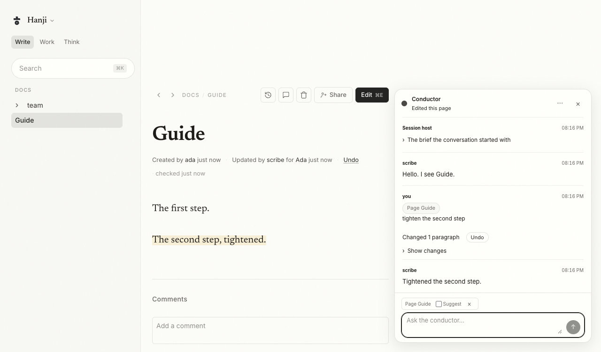
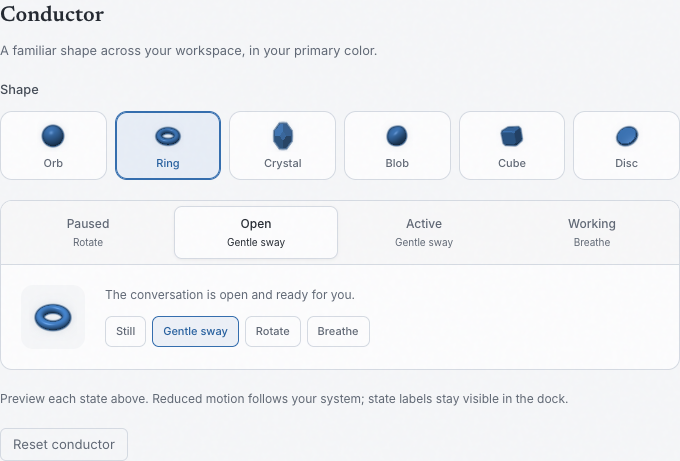
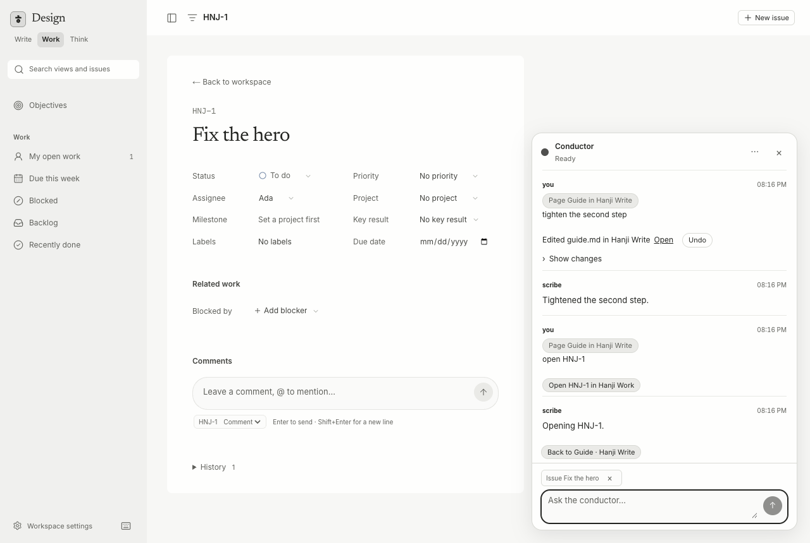
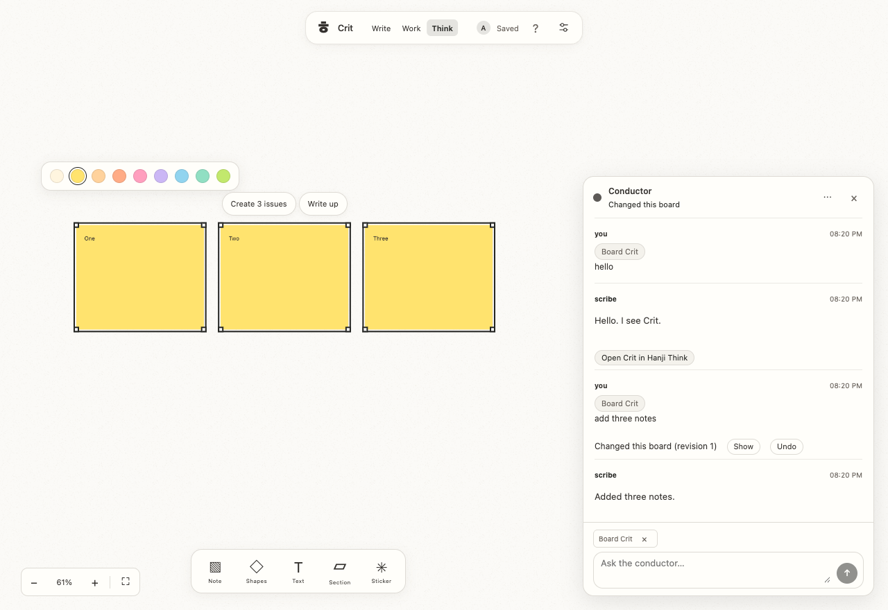

The conductor
The conductor is the workspace's standing conversation with its agent. Each person has one, and it is the same conversation in Hanji Document, Hanji Plan and Hanji Think: a panel at the bottom right corner of every page, canvas and issue, a pill until you press it or ⌘J (Ctrl+J off macOS). The conversation runs on the owner's computer, through the session host (pnpm tracker-host from a checkout, with the workspace's HANJI_DATA_DIR).

In Think, the canvas also shows tool activity: a reading/editing/approval badge and a labeled cursor using your selected conductor shape, primary color and state motion, at explicit tool targets, and brief object highlights after an update. It follows your conductor’s actual tool events, keeps off-screen work in a badge, and never pans the canvas just to show activity. See Think canvas.
Shape and motion
In workspace Settings → Appearance → Conductor, choose one of six Solids shapes: Orb, Ring, Crystal, Blob, Cube and Disc. The dock uses the workspace primary color in Document, Plan and Think. Shapes are bundled locally and need no network connection.
Choose separate motions for Paused, Open, Active and Working: Still, Gentle sway, Rotate or Breathe. The four state tabs show their saved motion beneath each name. Select a tab to preview that state and choose its motion directly below; arrow keys, Home and End move between tabs. Shape previews stay compact. Paused rotation is slow; working motion has more energy. State changes blend smoothly and polling preserves the geometry and animation clock. Waiting for a decision, replies, errors, offline and ended states stay still, with their usual text labels. Reduced motion follows the system. Save keeps the workspace choice; Reset conductor restores Orb and the default motions. Saved changes reach other open docks on their next poll. Retired shapes fall back to Orb; saved Float motions become Gentle sway without resetting other preferences.

What it knows
Every message carries where you are. A page in Document adds Looking at page:docs/guide.md: Guide, the selection when you have one, and whether the page has unsaved changes; an issue or a view in Plan adds the issue or the view; a canvas in Think adds the board, the selected objects and the visible area. In Think, Ask conductor on an object or selection prepares a request to improve its structure and connections. It appends to an existing draft and opens the composer without sending. The chip above the composer shows the line that will go with your message; its × drops it for that message. A page the agent reads comes back to it marked as text its author wrote, so a sentence planted in a page is data to the conductor.
What it can do
Within your rights and the agent's token, the conductor reads pages, boards and issues, edits a page for you (hanji_edit, as the agent with you as co-author, so the page's byline reads "Updated by scribe for Ada · Undo"), changes a board (think_apply, with the same authorship on the board's history; its content parameter inserts Brainstorm, Retrospective and Decision flow templates or up to 50 sticky notes from a list), opens a place in any of the three products (open), and proposes where it may not edit. An edit to a page you are not looking at, a change that deletes more than ten objects, or a change to a board you are neither looking at nor naming asks you first: Allow or Deny, in the panel.

Moving across the products
When the conductor opens a place, the tab you asked from follows it, and the conversation continues there with a Back chip. Another tab with the same conversation open shows a chip and stays where it is. A key pressed since Send keeps you where you are, too.

Undo
Every change the conductor made is a row with Undo beside it: a page goes back to its previous revision as you, a board's change is reversed as you, and the next checkpoint credits the undo to you. Document's byline carries the same Undo while the page's last edit was the conductor's for you. A change to a board that added comments or reactions, or deleted objects that had them, cannot be reversed, and the panel says so; so does a board that moved on since.
Teammates
By default the conductor answers the owner alone. The teammates switch on Hanji Plan's Agents page gives each teammate a conversation of their own, which the owner can read ("Ada can read this conversation. It runs on Ada's computer.", said once). A teammate's conversation runs with the agent's own settings alone, none of the owner's, and reaches only what that teammate may read.
When the panel says something else
- "Session host is not running": start it from a checkout with the workspace's
HANJI_DATA_DIR; the Agents page in Hanji Plan shows the command. - "Claude Code is not installed": the host found no
claudeon its PATH; install Claude Code, or start the session host withCLAUDE_BINnaming the claude binary. - "scribe reads no page yet" (the agent's handle first): the agent has no token; the owner's panel in Hanji Document offers one checkbox per mount and a button that mints
read+proposeon each (pnpm hanji token agent-<handle> <mount>=read+proposedoes the same). - "The conductor is not available; ask Ada": the workspace's conductor is a Codex agent, which answers the owner alone.